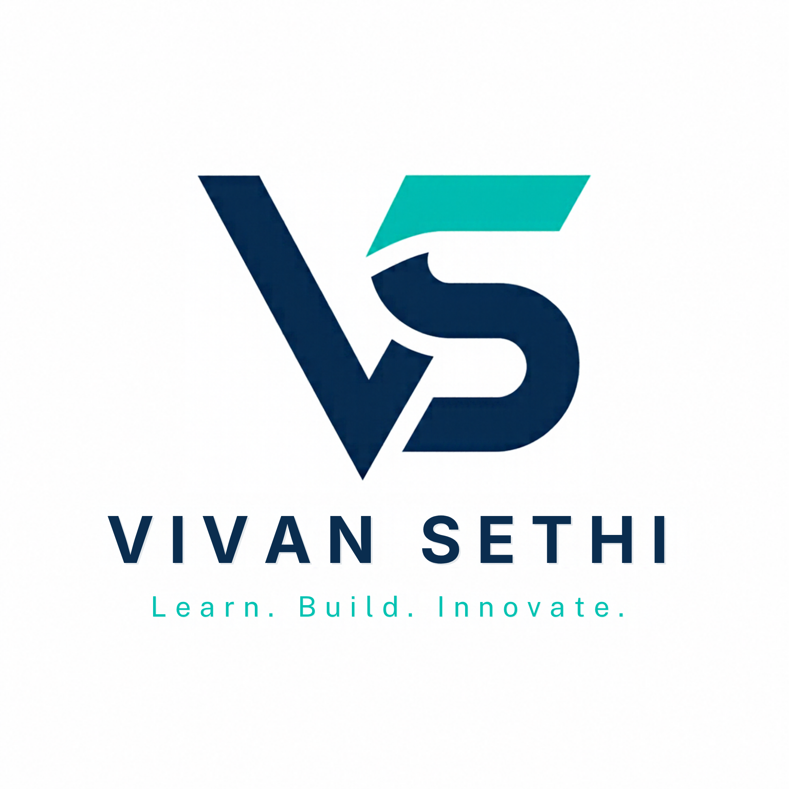
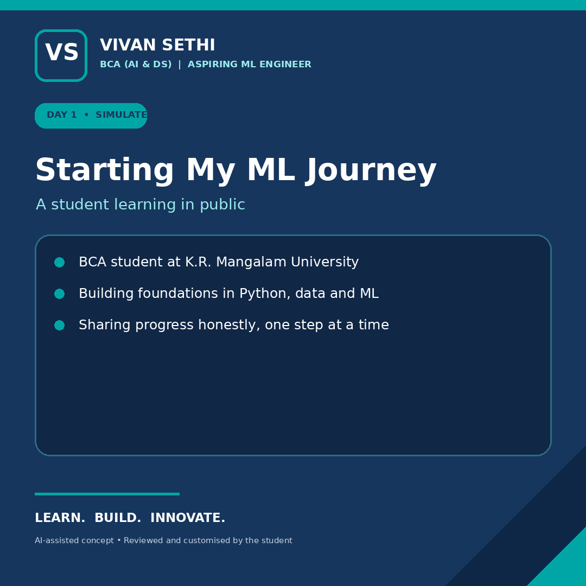
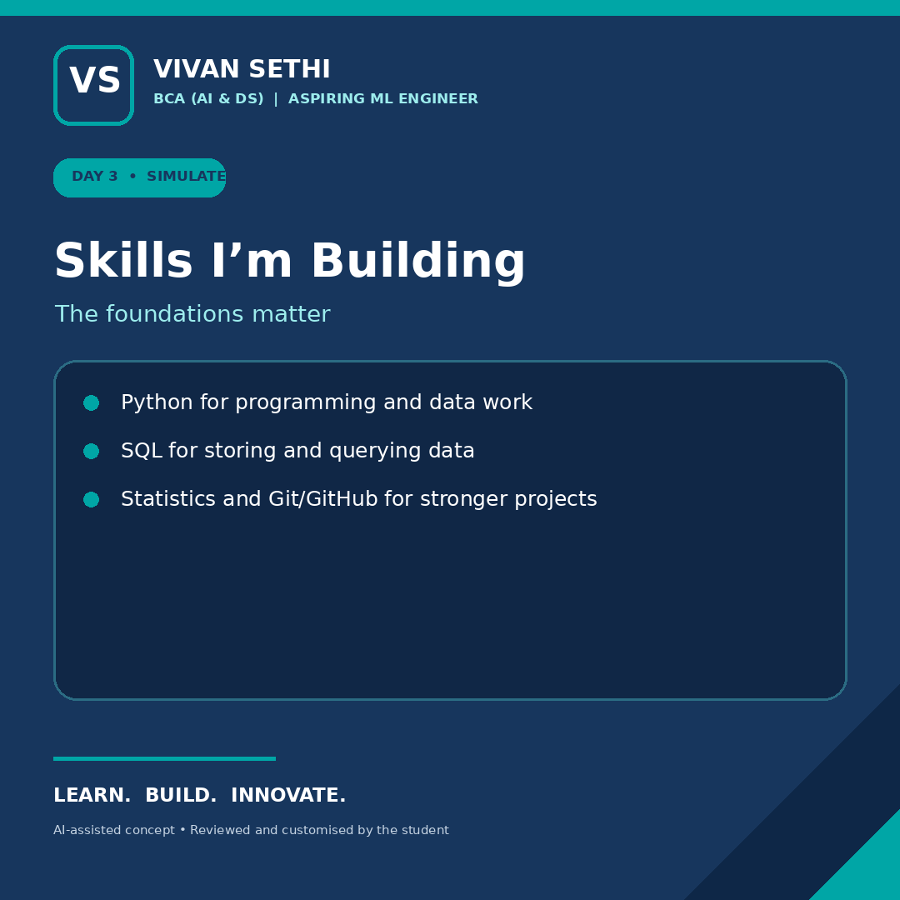
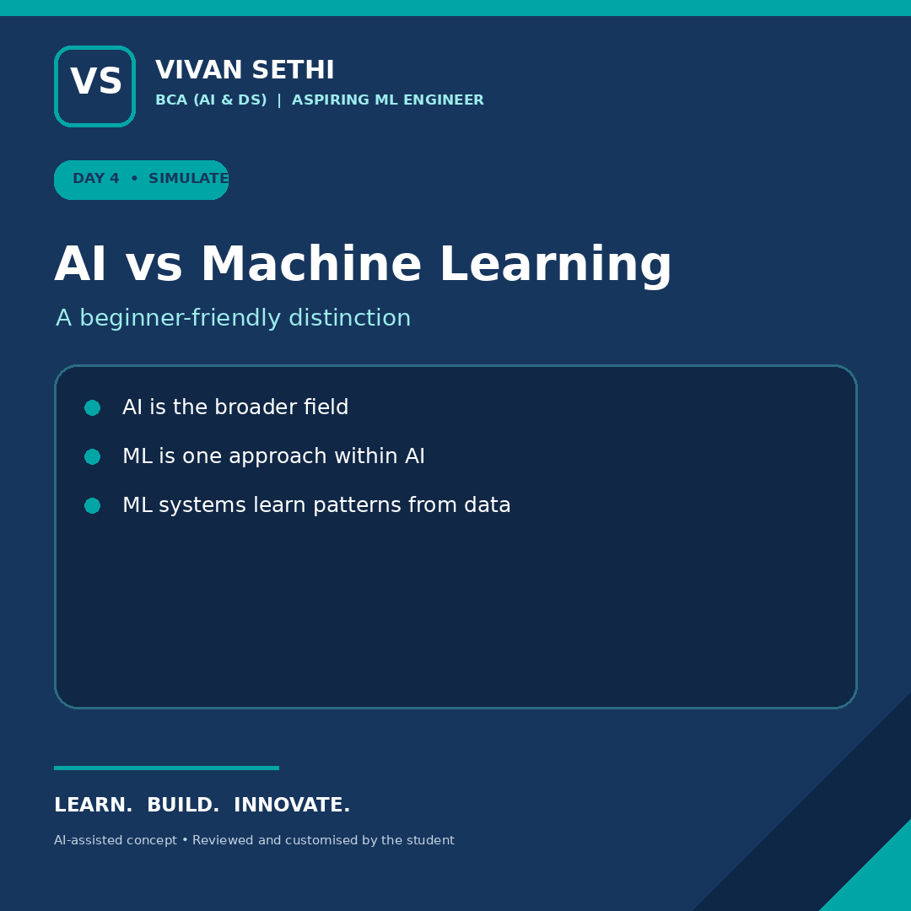
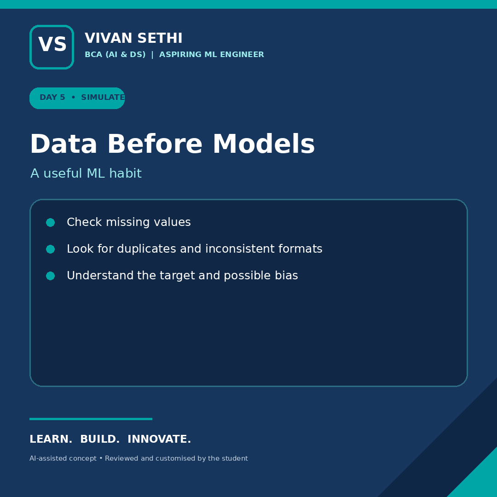
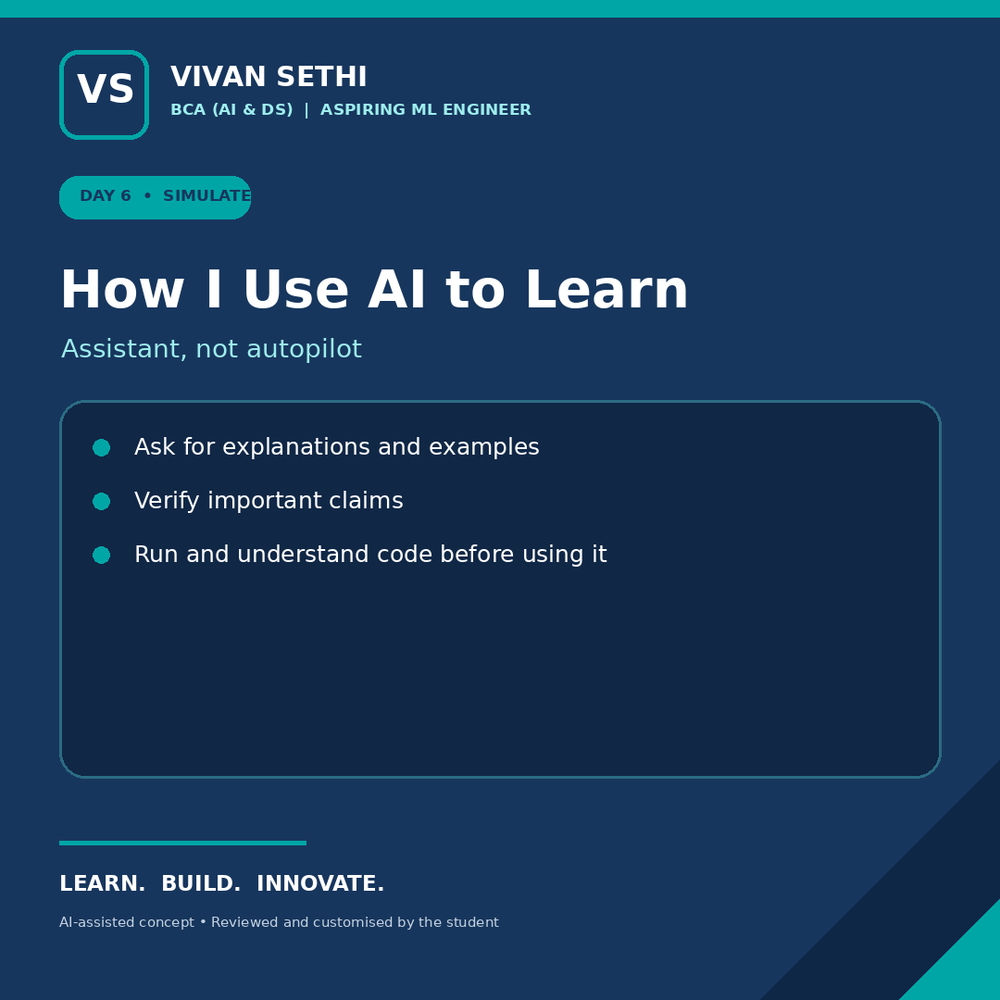
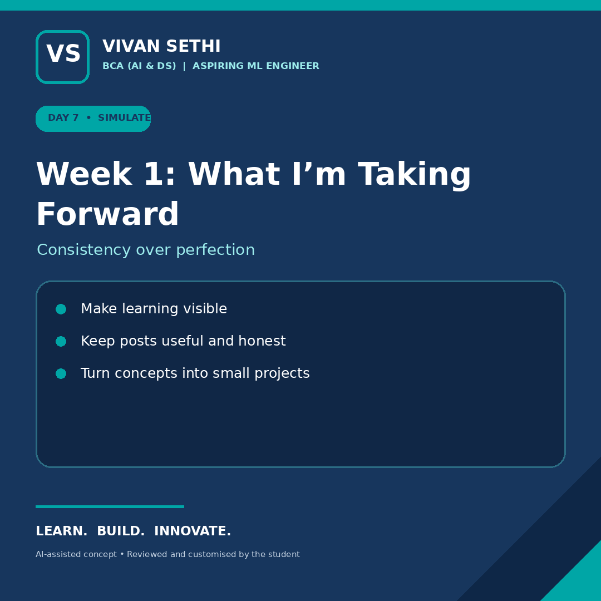

FOUNDATIONS
Python
Programming fundamentals, problem-solving, and using Python in small projects.

VIVAN SETHILEARN. BUILD. INNOVATE.BCA · AI & Data Science
I’m Vivan Sethi, a student exploring the intersection of programming, data, and artificial intelligence. I share what I learn, build practical projects, and improve one step at a time.
class FutureMLEngineer:
def __init__(self):
self.focus = [
"Python",
"Data Science",
"Machine Learning"
]
self.mindset = "Keep learning"
def build(self):
return "Small steps, real progress."01 / ABOUT ME
I’m pursuing a Bachelor of Computer Applications with a focus on Artificial Intelligence and Data Science at K.R. Mangalam University. My goal is to grow into a Machine Learning Engineer by strengthening my foundations and turning concepts into projects.
This portfolio documents my current skills, experiments, and learning journey. I value honest progress over exaggerated claims, and I’m interested in how data and AI can solve useful problems.
K.R. Mangalam University
Building foundations in code, data and AI
Projects, reflections and clear explanations
02 / TOOLKIT
My current toolkit and the areas I’m actively developing. I’ll update this section as I gain more hands-on experience.
Programming fundamentals, problem-solving, and using Python in small projects.
Building structured pages, styling interfaces, and responsive web layouts.
Working with relational data and connecting database concepts to applications.
Developing understanding of data preparation, model concepts, and responsible AI.
Progress bars are illustrative self-assessments, not formal test results or certifications.
03 / SELECTED WORK
COLLEGE PROJECT · WEB APPLICATION
A college-focused application concept for managing student records, course-wise marks, and result calculations. The planned workflow includes student lookup, teacher marks entry, and grade display.
This summary describes the project scope; add a live demo or repository link when ready.
Explore GitHub ↗WEB DEVELOPMENT
Practising page structure, CSS layouts, reusable components, and responsive behaviour through front-end recreations.
CURRENT LEARNING
Working toward stronger understanding of data cleaning, missing values, algorithms, and the role of evaluation in machine learning.
04 / LEARNING IN PUBLIC
A few sample posts from my personal-branding capstone. These are design examples and are not presented as proof of publication.

Setting a direction and documenting the learning process.

Sharing the fundamentals I’m working on.

Breaking down technical ideas for beginners.

Why data quality matters before training a model.

Using AI as a learning aid with human review.

Reflecting on progress and next steps.
05 / PRINCIPLES
Be accurate.
Check technical claims and explain uncertainty.
Be transparent.
Review AI-assisted work and represent contributions honestly.
Keep improving.
Use feedback and mistakes as part of the learning process.
06 / LET’S CONNECT
I’m interested in learning from the developer and AI community, sharing projects, and connecting with people who value curiosity and practical growth.